IPIA «E. Orfini» · Foligno
Il laboratorio di matematica
Attività, allenamenti, note di diario e verifiche. Scegli una sezione o una parola chiave, oppure cerca un argomento.
Il tuo allenamento
Lezioni a piccoli passi, sfide e serie giornaliere: la matematica dalla prima alla quinta.
Ogni stella è una parola chiave: toccala per vedere le attività. Trascina per ruotare.
Legenda
- Attività
- Allenati
- Journal
- Archivio
Stella più grande: più voci. Colore e forma: la sezione che ne ha di più; l'anello mostra le altre. Linea più spessa: più voci in comune.
Trascina lo sfondo per ruotare, una stella per spostarla. Rotella o due dita per ingrandire.
Su questo dispositivo ti mostro l'elenco, che è più leggero.
140 voci
Azzera i filtriAttività 49
Giochi, simulazioni e laboratori da aprire subito.
-
 Arcade
Arcade
AstroMath: volo tra le costellazioni della matematica
AstroMath: videogioco di esplorazione in volo tra dodici costellazioni della matematica, dai numeri relativi alla parabola. Ogni stella ha una creatura che pone una domanda generata dalla Quest: si risponde attraversando l'anello giusto, senza timer. Livelli in ordine di curricolo, badge, correnti a forma di grafico di funzione e collegamento con i progressi della Quest.
-
 Esplorazione
Esplorazione
Cinematismi 3D: ruota quadrata, Reuleaux e Cardano
Generatore di cinematismi dentati stampabili in 3D: ruota quadrata su guida a catenarie con sponde, triangolo di Reuleaux nel foro quadrato e su rulli sotto una piattaforma, coppia di Cardano con ingranaggi a evolvente, planetario a spina di pesce stampato già montato (print in place). Denti generati per inviluppo, solidi unici senza perni, scala per Bambu Lab A1, A1 mini e P2S, esportazione STL e codice OpenSCAD.
-
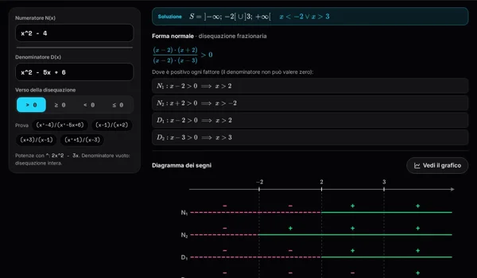
SimulazioneLaboratorio Interattivo: Sistemi vs Disequazioni frazionarie
Risolutore simbolico passo-passo con Tutor Socratico integrato: metti a confronto la regola dei segni nelle frazionarie con l'intersezione delle soluzioni nei sistemi, senza più fare confusione alla lavagna o sul quaderno.
-
 Esplorazione
Esplorazione
Parabola e disequazioni di secondo grado
Ambiente di studio sinottico per lo studio delle disequazioni di secondo grado. Include scomposizione in fattori, metodo del delta, diagrammi dei segni e visualizzazione grafica della parabola in tempo reale.
-
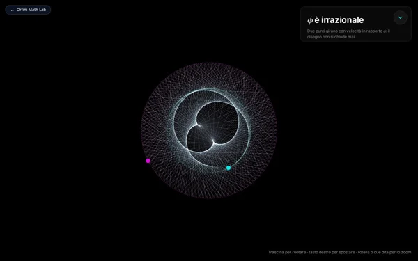
Simulazioneφ è irrazionale: il rapporto aureo
Esplorazione visiva del numero aureo () e della spirale logaritmica. Un'esperienza interattiva per visualizzare le frazioni continue, la fillotassi e l'incommensurabilità della proporzione aurea in natura.
-
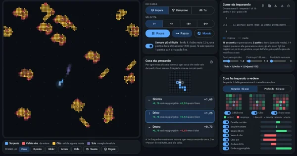
ArcadeSnake of Life
Snake of Life: un serpente che impara da solo a sopravvivere nel Gioco della Vita di Conway. Nessuno gli spiega le regole: 16 serpenti per generazione, i migliori fanno figli e il cervello migliora. Per capire evoluzione, intelligenza artificiale e sistemi reali come epidemie, mode ed ecosistemi.
-
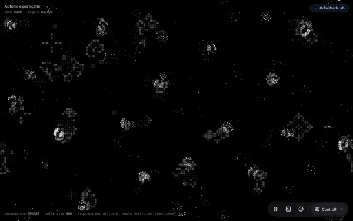
SimulazioneSimulatore di Automi Cellulari e Particelle
Laboratorio interattivo: migliaia di particelle che si attraggono e si respingono secondo una matrice di affinità, accoppiate a un automa cellulare (Vita di Conway e altre regole) da una soglia di accensione. Esplora emergenza e sistemi complessi, con palette personalizzabili e spiegazione animata. Per LIM, tablet e smartphone.
-
 Arcade
Arcade
Math Pool: Biliardo Cartesiano e retta
Biliardo 3D sul piano cartesiano con fisica vera: calcola pendenza, intercetta ed equazione della retta per mandare la palla in buca, usa pendenze e simmetrie per i tiri di sponda e la parabola (dal vertice o dagli zeri, come prodotto di due rette) per i tiri a effetto. Per smartphone, tablet, PC e LIM.
-
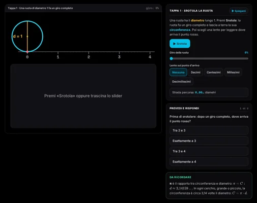
Simulazioneis irrational: perché π non è una frazione
Percorso guidato in quattro tappe sul numero : srotolare una ruota, cercare un'unità comune tra diametro e circonferenza, due lancette il cui disegno non si chiude mai e cifre decimali che non si ripetono. Con domande di previsione, quiz finale e spiegazione animata.
-
Arcade
Arcade Challenge: Unità di misura
Arcade Challenge: gioco arcade a sfida sulle equivalenze tra unità di misura: sali e scendi l'ascensore dei multipli, regola gli slider del laboratorio, abbina le coppie equivalenti, smista i pacchi sul nastro e risolvi problemi reali di cantiere. Lunghezze, litri, superfici, volumi e tempi.
-
 Simulazione
Simulazione
FuncLab AI: Esploratore di Funzioni
Laboratorio interattivo di analisi matematica: descrivi una funzione a parole e l'AI la disegna su un piano cartesiano navigabile (zoom, trascinamento, lettura dei punti), con zeri, massimi e minimi evidenziati, più funzioni sovrapposte e Tutor Socratico con sintesi vocale.
-
 Arcade
Arcade
Arcade Challenge: MCM & MCD
Arcade Challenge: gioco arcade a sfida per allenare m.c.m., M.C.D. e scomposizione in fattori primi: sincronie spaziali, teglie da tagliare, casi da detective e Factor Blaster.
-
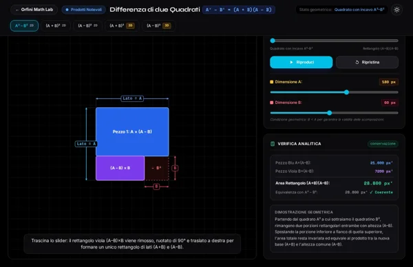
SimulazioneProdotti Notevoli: dimostrazioni geometriche 2D e 3D
Laboratorio interattivo di geometria dinamica: i prodotti notevoli dimostrati con aree e volumi. Differenza di quadrati, quadrato e cubo del binomio in 2D e 3D, con la dimostrazione passo passo del cubo della differenza.
-
Arcade
Arcade Challenge: Scomposizioni & Parabola
Arcade Challenge: gioco arcade a sfida, inclusivo, per allenare la scomposizione con prodotti notevoli, trinomio speciale e associazione equazione-grafico della parabola. Contestualizzato sugli indirizzi PTOF dell'IPIA Orfini di Foligno.
-
 Arcade
Arcade
Il Filo di Dedalo: Labirinto Matematico 2.5D
Laboratorio matematico e gioco 2.5D ambientato a Cnosso: affronta il labirinto di Dedalo e il Minotauro risolvendo sigilli su frazioni, percentuali, proporzioni, caccia all'errore e lessico. Modalità cooperativa LIM per la classe e Arena.
-
Arcade
Math Bubble: la retta esplicita
Laboratorio interattivo di Geometria Analitica: impara l'equazione della retta y = mx + q calcolando pendenza e quota per colpire ed eliminare tutte le bolle sul piano cartesiano.
-
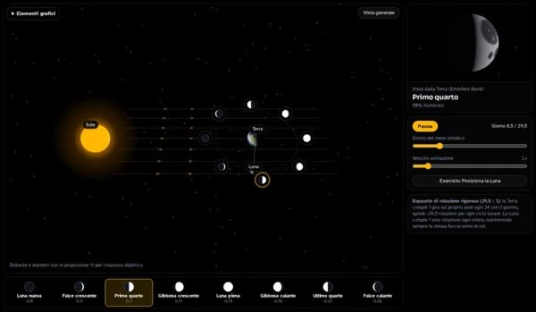
SimulazioneLe fasi della Luna
Simulatore 3D interattivo delle fasi lunari, dell'orbita Terra-Luna e dell'illuminazione solare. Modalità didattica e realistica, rotazione sincrona, punti di vista multipli ed eclissi.
-
 Simulazione
Simulazione
Studio Plotter CNC
Generatore ed elaboratore G-Code avanzato per pen plotter e CNC, con algoritmi generativi e simulatore 3D.
-
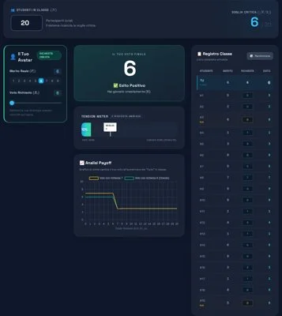
SimulazioneTeoria dei giochi e valutazione consapevole
Simulazione interattiva del Dilemma del Prigioniero ed Equilibrio di Nash. Laboratorio per esplorare la cooperazione e le scelte strategiche nel contesto del voto scolastico.
-
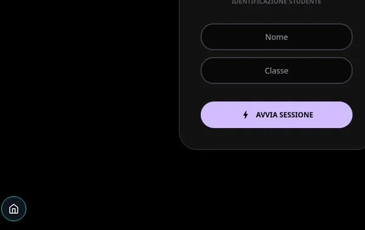
ArcadeChallenge: Scomposizione di Polinomi (PRO)
Versione PRO della sfida 3D sui polinomi: Ghost Target, X-Ray mode e variabili dinamiche.
-
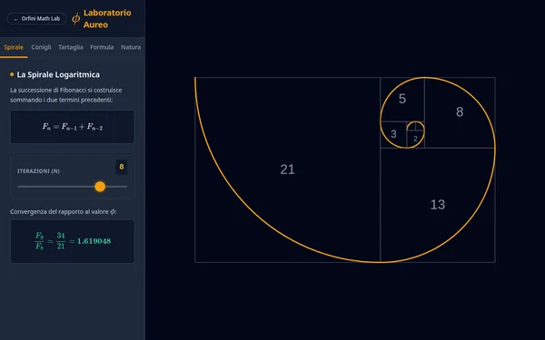
EsplorazioneExperience Fibonacci
Esplorazione interattiva della successione di Fibonacci, della spirale aurea e della fillotassi nei girasoli. Un'esperienza visiva per comprendere la convergenza del rapporto aureo e l'ottimizzazione geometrica in natura.
-
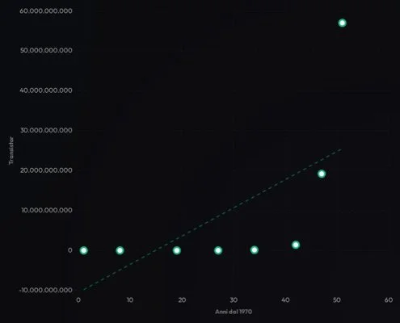
SimulazioneEsploratore di Scale Logaritmiche
Laboratorio interattivo sulle scale logaritmiche per esplorare la crescita esponenziale, le leggi di potenza e fenomeni fisici reali.
-
 Memory
Memory
Random Walk 3D: Hypercaos & Chromatic Memory
Simulatore interattivo di passeggiate aleatorie in 3D. Esplora il caos deterministico e la geometria frattale (Koch, Hilbert, Peano) attraverso algoritmi generativi e morphing cromatico in tempo reale.
-
Simulazione · sito esterno
Esercitazione GeoGebra: Retta per due punti
Esercitazione interattiva su GeoGebra per lo studio della retta passante per due punti. Esplorazione dinamica dei parametri.
-
 Memory
Memory
Palestra: Memory delle Scomposizioni
Gioco Memory per allenare il riconoscimento dei prodotti notevoli e delle scomposizioni (Raccoglimento, Quadrati, Trinomi).
-
 Memory
Memory
C.E. Match
Gioco Memory sul riconoscimento delle condizioni di esistenza di frazioni algebriche.
-
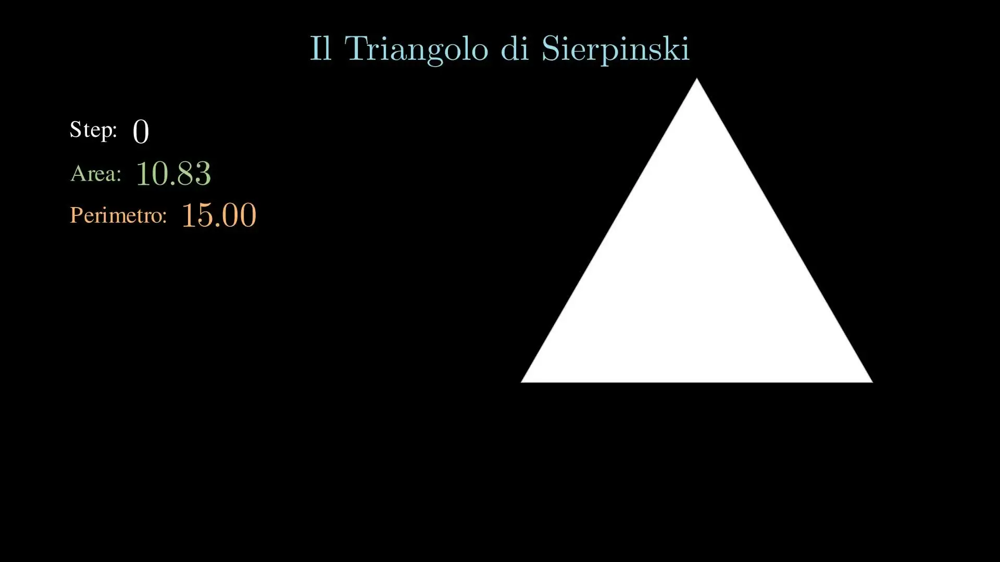
VideoIl Triangolo di Sierpinski (Video)
Costruzione ricorsiva del frattale di Sierpinski animata con Manim. A ogni passo l'area viene moltiplicata per 3/4 (tendendo a zero), mentre il perimetro viene moltiplicato per 3/2 (tendendo all'infinito): un'area nulla racchiusa da un confine infinito!
-
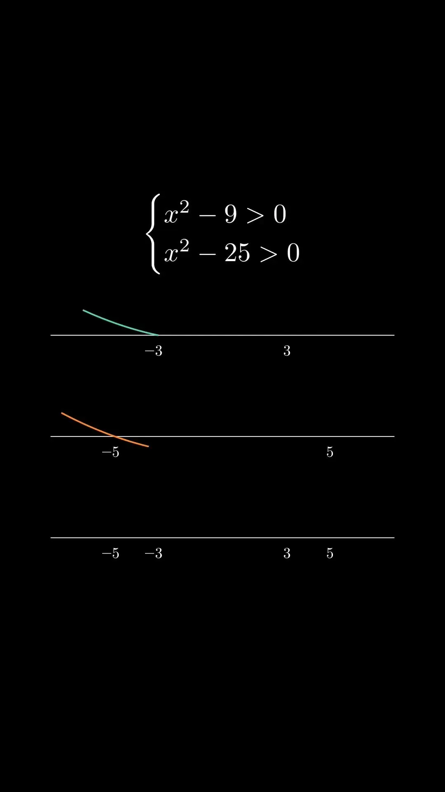
VideoVideo: Sistemi vs Disequazioni frazionarie ("Due sfighe non fanno una gioia")
Perché dal punto di vista del calcolo sembrano simili ma concettualmente sono opposti: nei sistemi cerchiamo le intersezioni (due 'sfighe' non fanno una gioia!), nelle frazionarie studiamo il segno (meno per meno fa più).
-
Esplorazione
Il metodo di esaustione
Visualizzazione parametrica del limite delle aree di poligoni regolari al crescere del numero dei lati per approssimare l'area del cerchio.
-
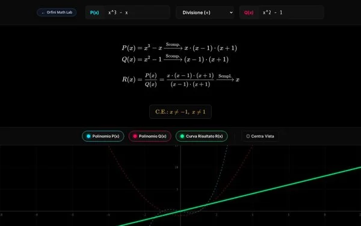
EsplorazioneEsploratore Grafico: Operazioni con i Polinomi
Esploratore grafico per polinomi che permette di visualizzare l'effetto delle operazioni (Addizione, Sottrazione) sulle funzioni risultanti.
-
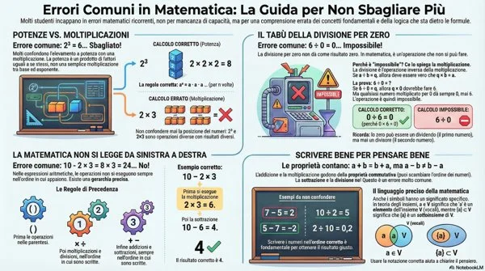
InfograficaErrori Comuni - Potenze, Espressioni
Risorsa: Errori Comuni. Prontuario per evitare gli errori più comuni nel calcolo di espressioni.
-
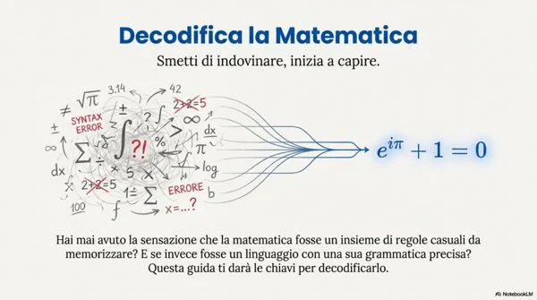
InfograficaDecodifica la Matematica: grammatica dei simboli
Smetti di indovinare, inizia a capire: prontuario visuale per decodificare il formalismo, i simboli e la sintassi matematica, trasformando un insieme di regole mnemoniche in un linguaggio chiaro e accessibile.
-
Simulazione · sito esterno
AI Math Assistant: Tutor Didattico Sperimentale
Assistente conversazionale basato su modelli linguistici per la didattica della matematica: guida lo studente nel ragionamento socratico, nell'analisi degli errori e nella formulazione di ipotesi.
-
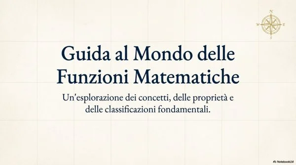
InfograficaGuida al Mondo delle Funzioni Matematiche
Mappa concettuale e infografica sinottica per orientarsi tra dominio, codominio, proprietà (iniettività, suriettività) e classificazione analitica delle funzioni elementari.
-
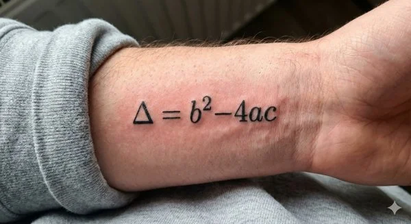
ImmagineFormula del Delta: (Tattoo)
Il discriminante delle equazioni di secondo grado impresso sulla pelle: un promemoria visivo e ironico per ricordare una volta per tutte che il segno del decide quante soluzioni reali esistono.
-
 Arcade
Arcade
Percent Lab
Laboratorio interattivo sulle percentuali. Visualizzazione, calcolo mentale e gamification.
-
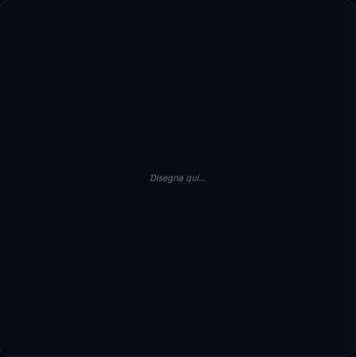
EsplorazioneSketch to Pattern: Arte Generativa
Strumento di arte generativa che trasforma schizzi a mano libera in pattern geometrici complessi. Sperimenta con algoritmi, semplificazione e tassellazioni.
-
 Simulazione
Simulazione
Guida 3D: Scomposizione di Polinomi (Algebra Tiles)
Laboratorio interattivo 2D/3D per visualizzare la fattorizzazione di polinomi come aree e volumi. Include esportazione STL per la stampa 3D dei kit didattici.
-
 Simulazione
Simulazione
Laboratorio di operazioni tra Frazioni
Simulatore interattivo per comprendere le operazioni tra frazioni (Somma, Prodotto, Potenza) attraverso modelli visivi (Torte) e retta numerica.
-
 Simulazione
Simulazione
Esploratore Numerico: Pitagora & Tartaglia
Laboratorio interattivo per scoprire i pattern dei numeri: Tavola Pitagorica (Primi, Quadrati), Triangolo di Tartaglia (Combinatoria) e regole di divisibilità.
-
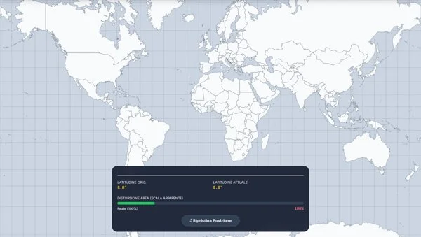
EsplorazioneMappe & Distorsioni: Mercatore
Modello interattivo in D3.js per esplorare le distorsioni della proiezione di Mercatore confrontando le aree reali dei paesi.
-
 Memory
Memory
GonioMatch: Memory su valori notevoli di funzioni goniometriche
Arcade educativo per allenare il riconoscimento immediato dei valori trigonometrici (Seno, Coseno) sulla circonferenza goniometrica.
-
 Simulazione
Simulazione
Albero di Pitagora: Frattali 3D
Simulazione WebGL dell'Albero di Pitagora in 3D. Un'esplorazione visiva dei frattali e delle relazioni geometriche tra i quadrati.
-
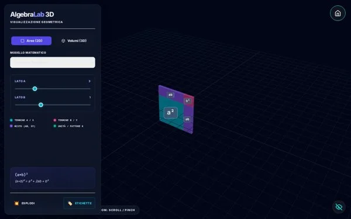
SimulazioneAlgebraLab 3D: Scomposizione di polinomi attraverso prodotti notevoli e trinomio speciale
Simulatore 3D interattivo per visualizzare prodotti notevoli e scomposizioni come aree e volumi.
-
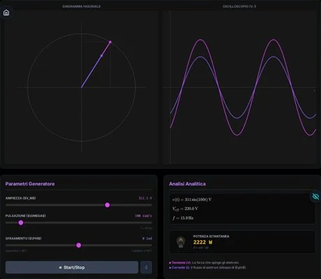
SimulazioneSimulazione CA: Fasori & Onde
Simulatore interattivo del comportamento in Corrente Alternata (Sfasamento, Valori Efficaci, Potenza) per il corso di macchine elettriche.
-
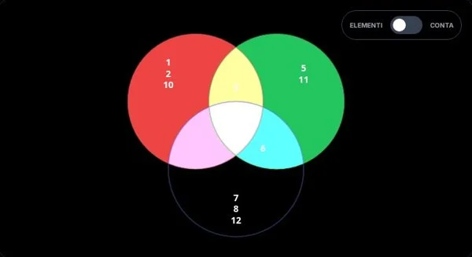
SimulazioneLogic Lab: Insiemi & Venn
Laboratorio interattivo per esplorare la Teoria degli Insiemi. Definisci gli elementi, componi espressioni logiche (Unione, Intersezione) e visualizza i Diagrammi di Venn in tempo reale.
-
 Esplorazione
Esplorazione
Math Underground: Mappa per la classificazione di Funzioni
Mappa interattiva della metropolitana per lo studio teorico delle funzioni analitiche e delle loro principali proprietà (Dominio, Codominio).
-
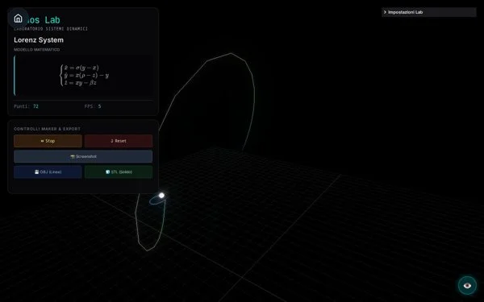
SimulazioneChaos Lab: Sistemi Dinamici
Simulatore 3D di Attrattori Strani (Lorenz, Rössler, Chen). Esplora il Caos Deterministico e le Equazioni Differenziali tramite integrazione numerica RK4.
-
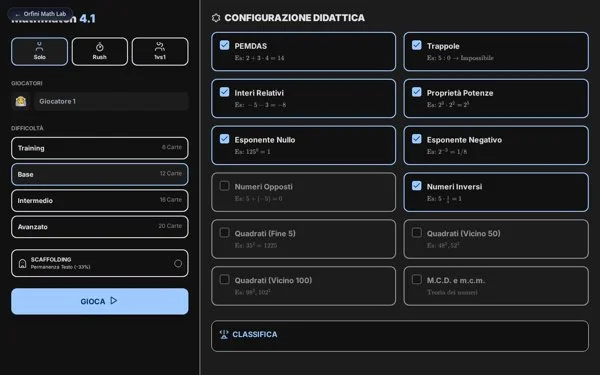
MemoryCaccia all'Errore: Memory su Operazioni in Z
Missione di addestramento sui Numeri Interi (Z) e le Potenze. Trova le corrispondenze corrette ed evita le trappole degli errori comuni di calcolo.


Allenati 58
Lezioni a piccoli passi della Quest, con numeri sempre nuovi.
Apri la Quest-
Lezione
Matematica di tutti i giorni
Spesa, viaggi, bollette, abbonamenti, risparmio, rate e giochi d'azzardo.
-
Lezione
Matematica in officina
Scale, tolleranze, giri del mandrino, ingranaggi, costi e scarti.
-
Lezione
Matematica sul quadro elettrico
Legge di Ohm, potenza e bolletta, serie e parallelo, alternata, decibel.
-
Lezione
Matematica in sartoria
Figurini in scala, metri di tessuto, gonna a ruota, prezzi, taglie, collezioni.
-
Lezione
Matematica per la grafica
Formati, pixel e dpi, griglie, ridimensionamenti, preventivi, dati delle campagne.
-
Lezione
Matematica in laboratorio odontotecnico
Gesso e acqua, micron, leghe e carati, ritiro della zirconia, diluizioni, costi.
-
Lezione
Matematica nei servizi alla persona
Porzioni, liquidi, rampe accessibili, indicatori della popolazione, budget del servizio.
-
Lezione
Numeri relativi
Segni, regola dei segni ed espressioni brevi.
-
Lezione
Frazioni
Parti di un intero: ridurre, confrontare, operare.
-
Lezione
Percentuali
Dal "su cento" a sconti, aumenti e prezzi originali.
-
Lezione
Proprietà delle potenze
Prodotti, quozienti, potenze di potenze. Capire perché, non solo come.
-
Lezione
Proporzioni
Ricette, mappe, consumi, squadre di lavoro.
-
Lezione
Notazione scientifica
Numeri giganti e minuscoli, con le potenze di 10.
-
Lezione
Radicali
Stimare, semplificare e razionalizzare le radici.
-
Lezione
Successione di Fibonacci
La regola, i quadrati a spirale e i numeri che non cambiano mai.
-
Lezione
Monomi e polinomi
Il calcolo con le lettere, regola per regola.
-
Lezione
Prodotti notevoli
Quadrati, cubi e somme per differenza, anche con le figure.
-
Lezione
Scomposizioni
Da somma a prodotto: il contrario dei prodotti notevoli.
-
Lezione
Equazioni di primo grado
La bilancia: stesse operazioni a destra e a sinistra.
-
Lezione
Equazioni di primo grado: oltre gli interi
Coefficienti frazionari e irrazionali, prodotti notevoli che si semplificano.
-
Lezione
Disequazioni di primo grado
Quando la bilancia pende: soluzioni come intervalli.
-
Lezione
Equazioni di secondo grado
Il discriminante, la formula e la parabola che taglia l'asse x.
-
Lezione
Disequazioni di secondo grado
Il segno della parabola risolve la disequazione.
-
Lezione
Funzioni lineari
Leggere grafici e tabelle, tariffe e costi.
-
Lezione
Pendenza di una retta
Quanto sale, quanto avanza: il coefficiente angolare.
-
Lezione
Rette parallele e perpendicolari
Stessa pendenza, pendenze antireciproche, incroci.
-
Lezione
Sistemi lineari
Due equazioni, due incognite, due rette.
-
Lezione
Aree e perimetri
Rettangoli, triangoli, cerchi e stanze a forma di L.
-
Lezione
Il teorema di Pitagora
Quadrati sui lati, ipotenuse e cateti, misure reali.
-
Lezione
Similitudine e Talete
Stessa forma, misure diverse: ombre, mappe, ingrandimenti.
-
Lezione
Solidi e volumi
Scatole, cilindri, coni e litri.
-
Lezione
Trigonometria del triangolo rettangolo
Seno, coseno e tangente per rampe, scale e pendenze.
-
Lezione
Rapporto aureo e sezione aurea
Il numero φ nelle piante, nei progetti e nelle leggende.
-
Lezione
Statistica
Media, mediana, moda e grafici veri.
-
Lezione
Probabilità
Dadi, palline, monete: misurare l'incertezza.
-
Lezione
Calcolo combinatorio
Contare senza contare: menù, podi, codici, gruppi.
-
Lezione
La parabola
Vertice, concavità, traslazioni e massimi.
-
Lezione
Esponenziali
Crescite che esplodono, decadimenti, interessi composti.
-
Lezione
Logaritmi
L'esponente nascosto: decibel, pH, tempi di crescita.
-
Lezione
Goniometria
Circonferenza goniometrica, radianti, onde.
-
Lezione
Studio di funzione
Dominio, zeri, segno, crescenza, asintoti: leggere un grafico.
-
Lezione
Problemi di scelta
Pareggio, tariffe, massimo guadagno: la matematica delle decisioni.
-
Lezione
Allenamento INVALSI – seconda
Quesiti originali nello stile della prova di grado 10.
-
Lezione
Allenamento INVALSI – quinta
Manutenzione e ricontestualizzazione, come nella prova di grado 13.
-
Lezione
Dividi e sposta
Moltiplica separatamente unità e decine; il riporto delle unità si sposta sulle decine.
-
Lezione
Per 11
Per moltiplicare per 11 un numero di due cifre, scrivi la loro somma in mezzo: 36 × 11 = 3|9|6.
-
Lezione
Per 5, per 25, per 50
×5 = ×10 : 2; ×25 = ×100 : 4; ×50 = ×100 : 2.
-
Lezione
Raddoppia e dimezza
Dimezza un fattore pari e raddoppia l'altro finché il conto non diventa tondo: 16 × 35 = 8 × 70.
-
Lezione
Quadrati che finiscono per 5
Il quadrato di un numero che finisce per 5 è: (decine) × (decine + 1), seguito da 25.
-
Lezione
Simmetrici attorno a un numero tondo
Due numeri alla stessa distanza da un numero tondo: quadrato del tondo meno quadrato della distanza.
-
Lezione
Percentuali che si scambiano
Se una percentuale è scomoda, scambiala con il numero: 8% di 50 = 50% di 8 = 4.
-
Lezione
Numeri vicini a 100
Lavora con gli scarti da 100: somma incrociata a sinistra, prodotto degli scarti a destra.
-
Lezione
La prova del 9
Ogni numero ha lo stesso resto nella divisione per 9 della somma delle sue cifre: si usa per scoprire errori.
-
Lezione
Guadagni e perdite in percentuale
Le percentuali di guadagno si calcolano sul costo; un +x% e un −x% sullo stesso prezzo di vendita fanno perdere x²/100 %.
-
Lezione
Lavorare insieme
Se da soli due impiegano x e y giorni in più che insieme, insieme impiegano √(xy) giorni.
-
Lezione
Costo uguale al guadagno percentuale
Scrivi il prezzo di vendita come prodotto di due numeri che differiscono di 10: il minore × 10 è il costo.
-
Lezione
Cosa resta costante
Trova la grandezza che non cambia: allora le altre due sono in proporzione diretta o inversa.
-
Lezione
Il triangolo dei coefficienti
Ogni numero è la somma dei due sopra; la riga n somma a 2ⁿ e contiene i coefficienti di (a + b)ⁿ.
Journal 15
Il diario di bordo: come nascono le attività e come vanno in classe.
Tutte le note-
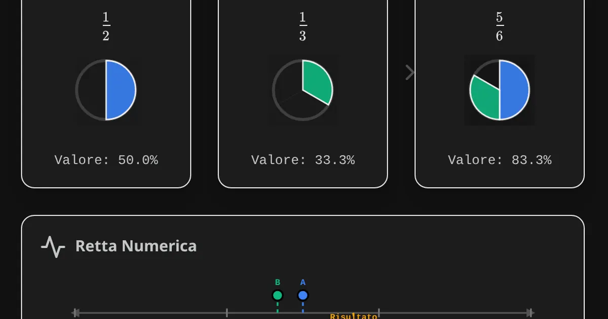
Nota ·Fractions Lab: le frazioni in torte e sulla retta
Somma, differenza, prodotto, quoziente e potenza tra frazioni, in torte e sulla retta; e le quattro facce della stessa idea, la commensurabilità: frazione, numero razionale, proporzione, percentuale.
-
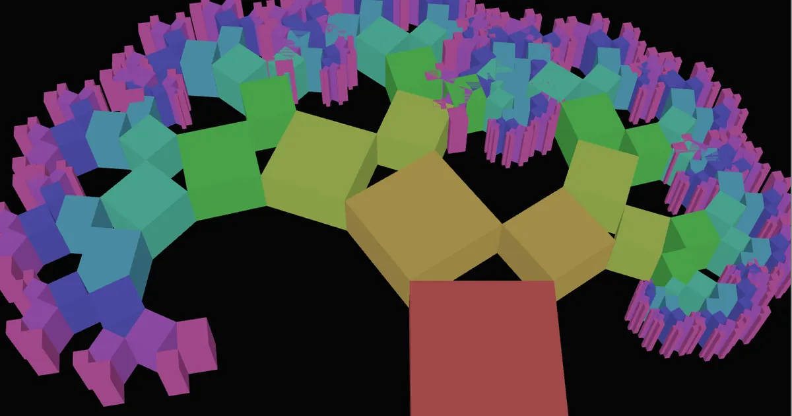
Nota ·Il teorema di Pitagora, dal triangolo all'albero frattale
Un quadrato, un triangolo rettangolo, due quadrati più piccoli, e di nuovo: l'albero di Pitagora fa vedere il teorema e lo trasforma in un frattale da stampare in 3D.
-
Nota ·
Lo studio di funzione con FuncLab: un'onda chiusa in un cerchio
Si chiede all'intelligenza artificiale "una funzione periodica di frequenza 10x, inclusa in un cerchio di raggio 10" e poi la si studia davvero: dominio, simmetria, zeri, inviluppo, con il tutor socratico.
-
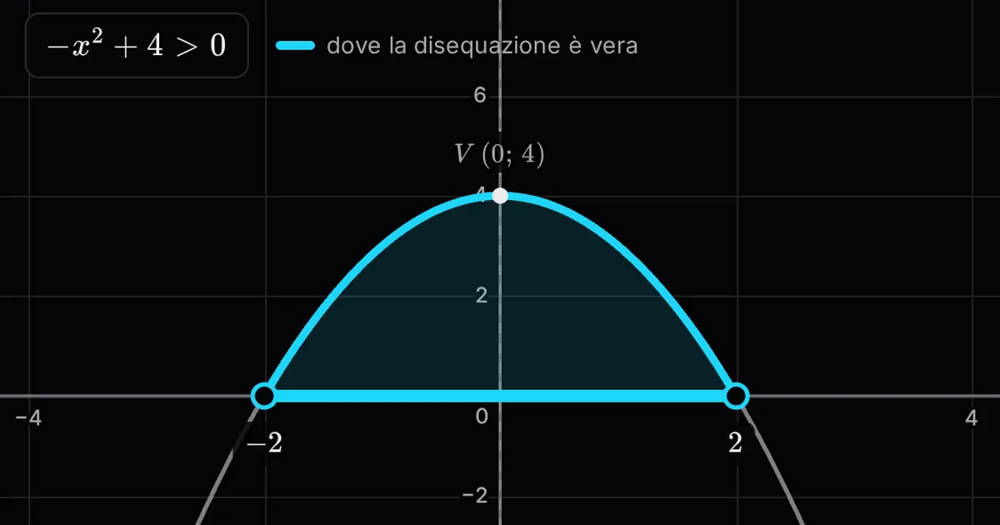
Nota ·Disequazioni di secondo grado: la risposta si legge sulla parabola
Il laboratorio sulla parabola ora inquadra da solo vertice e radici e colora la soluzione: la disequazione diventa una domanda sul grafico.
-
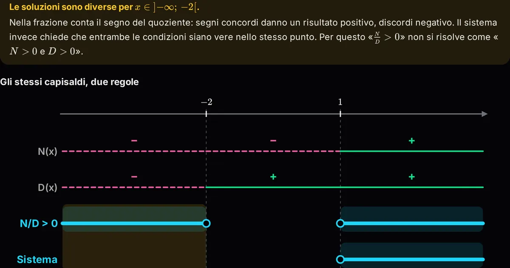
Nota ·Frazionaria o sistema? Due regole che si somigliano troppo
Nel laboratorio sulle disequazioni la nuova scheda Confronto mette fianco a fianco N/D e il sistema di N e D, e mostra dove le due regole non sono d'accordo.
-
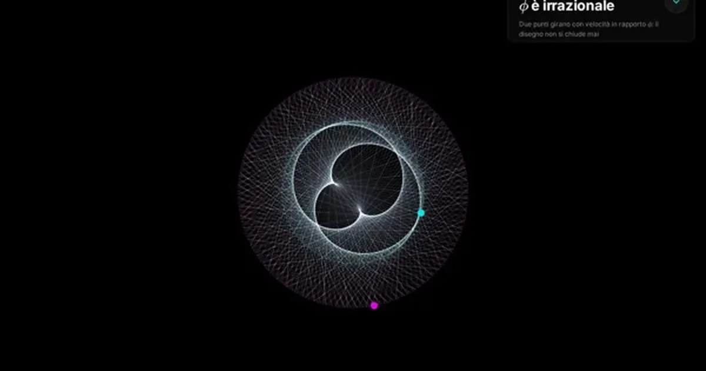
Nota ·φ e le frazioni di Fibonacci: vedere un numero che non si lascia scrivere
Nell'app sul rapporto aureo ora le frazioni di Fibonacci si avvicinano a φ sotto gli occhi, una dopo l'altra.
-
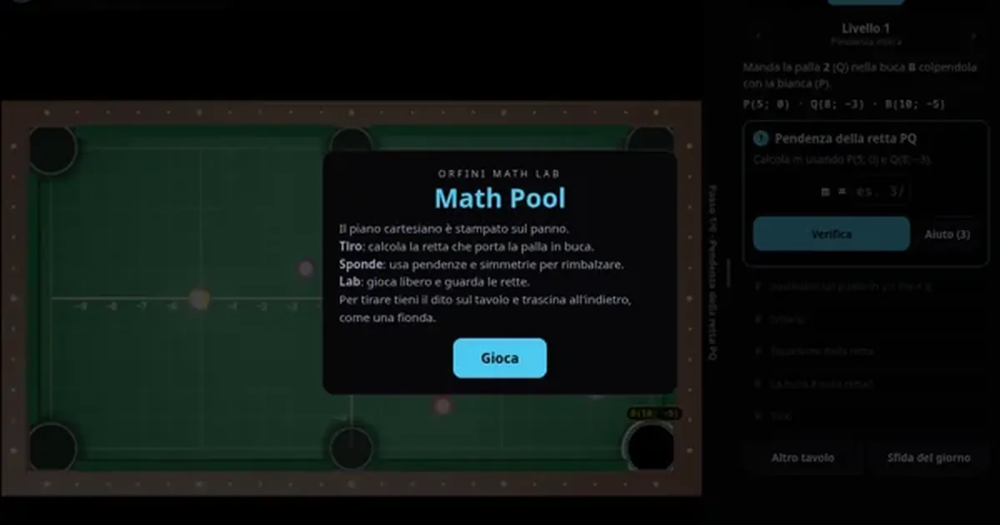
Nota ·Math Pool: la retta diventa un tiro di sponda
Il biliardo cartesiano passa al 3D con fisica vera, e la parabola entra in gioco con i tiri a effetto.
-
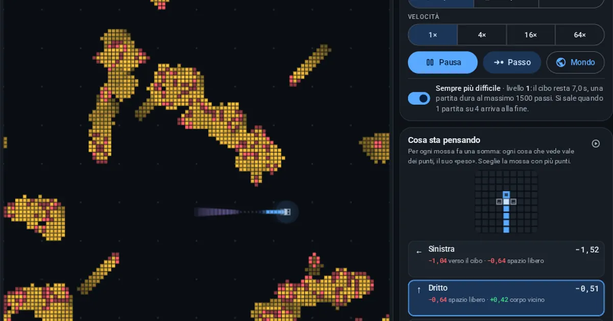
Nota ·Snake of Life: un serpente che impara da solo
Un esperimento del laboratorio: il Gioco della Vita di Conway incontra un algoritmo evolutivo.
-
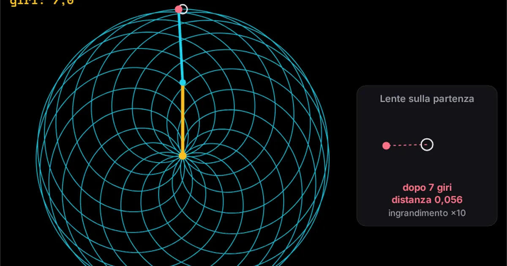
Nota ·π non è una frazione (e nemmeno √2)
Un percorso in quattro tappe per capire perché diametro e circonferenza non hanno un'unità di misura comune.
-
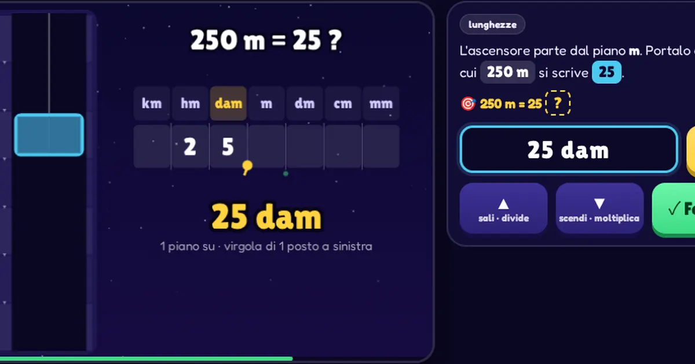
Nota ·Arcade Challenge: le unità di misura in ascensore
Il nuovo gioco della serie Arcade Challenge porta le equivalenze tra unità di misura in cantiere.
-
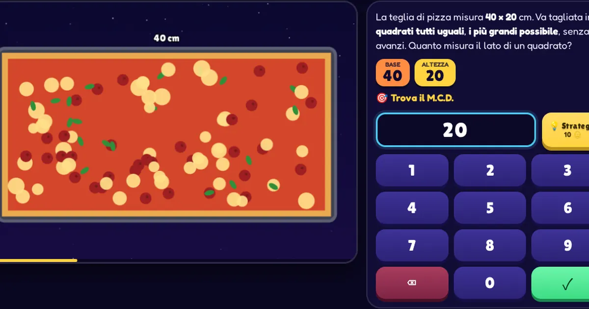
Nota ·Arcade Challenge: quando serve il mcm e quando il MCD
Luci che lampeggiano insieme, teglie da tagliare, casi da detective: il primo gioco della serie Arcade Challenge allena m.c.m., M.C.D. e fattori primi.
-
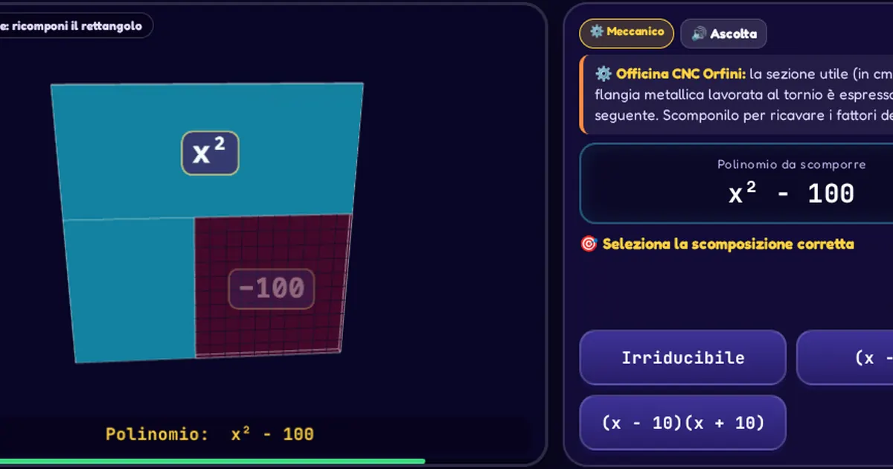
Nota ·Arcade Challenge: scomporre a colpi di aree
Nel gioco su scomposizioni e parabola i prodotti notevoli diventano aree da comporre, e ogni missione ha la sua spiegazione animata.
-
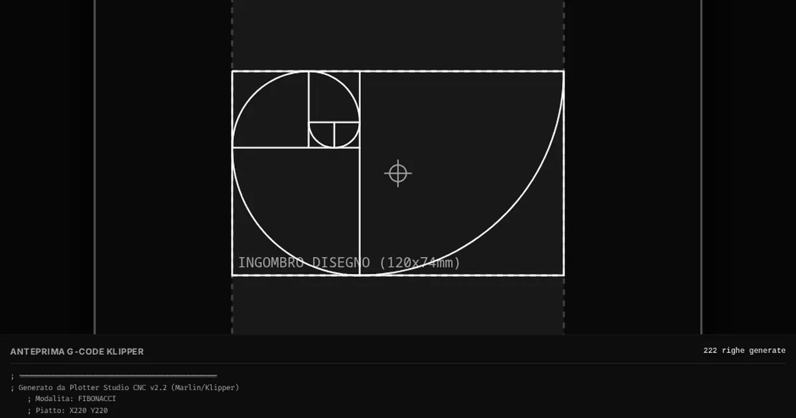
Nota ·Studio Plotter CNC: dalla curva alla penna
Curve, frattali e solidi diventano istruzioni per una stampante 3D con la penna: la matematica che si tiene in mano.
-
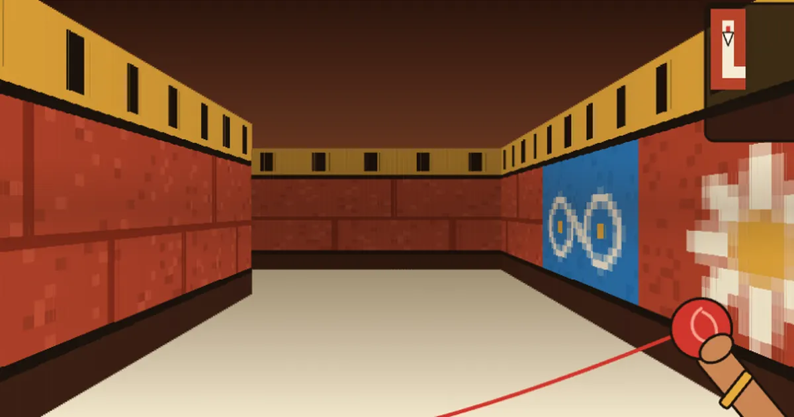
Nota ·Il filo di Dedalo: un labirinto da risolvere con la matematica
A Cnosso, nel labirinto del Minotauro, le porte si aprono solo risolvendo sigilli su frazioni, percentuali e proporzioni.
-
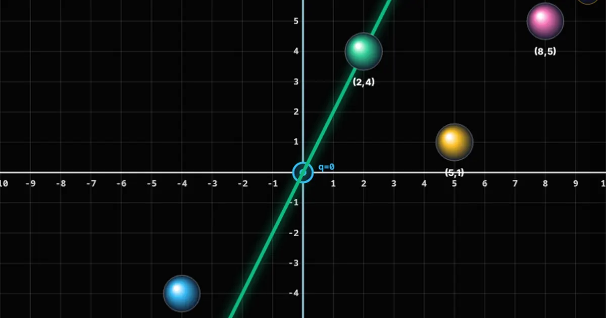
Nota ·Math Bubble: la retta che fa scoppiare le bolle
Per eliminare le bolle sul piano cartesiano bisogna scegliere pendenza e quota giuste: y = mx + q diventa un bersaglio.
Archivio 18
Le verifiche già svolte, per mettersi alla prova su carta.
Apri l'archivio-
Verifica
Verifica di maggio 2026: Proprietà delle potenze, Frazioni e percentuali, Proporzioni in elettrotecnica…
Verifica sommativa strutturata su Proprietà delle potenze, Frazioni e percentuali, Proporzioni in elettrotecnica, Geometria frattale (Sierpinski) e Errore percentuale. Include vademecum socratico per il ragionamento logico.
-
Verifica
Verifica di maggio 2026: Piano cartesiano, Distanza fra due punti, Punto medio, Equazione della retta in forma esplicita, Equazioni…
Verifica sommativa strutturata su Piano cartesiano, Distanza fra due punti, Punto medio, Equazione della retta in forma esplicita, Equazioni, Grafici, Retta, Pitagora, Geometria. Tempo a disposizione stimato: 40 min.
-
Verifica
Verifica di marzo 2026: Disequazioni lineari, Sistemi di disequazioni, Disequazioni frazionarie…
Verifica sommativa strutturata su Disequazioni lineari, Sistemi di disequazioni, Disequazioni frazionarie, Problemi risolvibili attraverso disequazioni, Equazioni, Disequazioni, Retta, Scomposizione, Insiemi. Tempo a disposizione stimato: 70 min.
-
Verifica
Verifica di marzo 2026: Studio di funzione, Classificazione e dominio, Funzioni, Dominio, Grafici, Retta, Polinomi, Elettricità
Verifica sommativa strutturata su Studio di funzione, Classificazione e dominio, Funzioni, Dominio, Grafici, Retta, Polinomi, Elettricità. Tempo a disposizione stimato: 70 min.
-
Verifica
Verifica di marzo 2026: Funzioni, Dominio, Grafici
Verifica sommativa strutturata su Funzioni, Dominio, Grafici.
-
Verifica
Verifica di marzo 2026: Equazioni di secondo grado e parabola, Equazioni, Grafici, Parabola, Retta, Polinomi
Verifica sommativa strutturata su Equazioni di secondo grado e parabola, Equazioni, Grafici, Parabola, Retta, Polinomi. Tempo a disposizione stimato: 70 min.
-
Verifica
Verifica di marzo 2026: Algebra manuale di analisi: scomposizioni, Frazioni e modelli logici, Equazioni, Disequazioni, Dominio…
Verifica sommativa strutturata su Algebra 2el manuale di analisi: scomposizioni, Frazioni e modelli logici, Equazioni, Disequazioni, Dominio, Grafici, Retta, Polinomi, Scomposizione, Elettricità.
-
Verifica
Verifica di marzo 2026: Equazioni frazionarie, Disequazioni lineari, Sistemi di disequazioni lineari, Disequazioni frazionarie…
Verifica sommativa strutturata su Equazioni frazionarie, Disequazioni lineari, Sistemi di disequazioni lineari, Disequazioni frazionarie, Equazioni, Disequazioni, Grafici, Retta, Polinomi. Tempo a disposizione stimato: 70 min.
-
Verifica
Verifica di marzo 2026: Pemdas, Numeri interi e relativi, Proprietà delle potenze, Numeri razionali, Proporzioni e percentuali…
Verifica sommativa strutturata su Pemdas, Numeri interi e relativi, Proprietà delle potenze, Numeri razionali, Proporzioni e percentuali, Mcm/mcd, Retta, Elettricità, Insiemi. Tempo a disposizione stimato: 50 min.
-
Verifica
Verifica di febbraio 2026: Scomposizioni, Frazioni algebriche, Equazioni frazionarie, Modellizzazione, M
Verifica sommativa strutturata su Scomposizioni, Frazioni algebriche, Equazioni frazionarie, Modellizzazione, M.c.m./m.c.d, Equazioni, Retta, Polinomi, Scomposizione, Insiemi. Tempo a disposizione stimato: 50 min.
-
Verifica
Verifica di febbraio 2026: Scomposizioni, Frazioni algebriche, Modellizzazione, Mcm/mcd, Equazioni, Retta, Polinomi, Scomposizione…
Verifica sommativa strutturata su Scomposizioni, Frazioni algebriche, Modellizzazione, Mcm/mcd, Equazioni, Retta, Polinomi, Scomposizione, Insiemi. Tempo a disposizione stimato: 50 min.
-
Verifica
Verifica di gennaio 2026: Equazioni e sistemi lineari, Equazione della retta in forma esplicita, Fattorizzazione di polinomi…
Verifica sommativa strutturata su Equazioni e sistemi lineari, Equazione della retta in forma esplicita, Fattorizzazione di polinomi, Frazioni algebriche, Equazioni, Dominio, Retta, Polinomi, Scomposizione, Geometria. Tempo a disposizione stimato: 50 min.
-
Verifica
Verifica di dicembre 2025: Equazioni di primo grado, Equazioni con prodotti notevoli…
Verifica sommativa strutturata su Equazioni di primo grado, Equazioni con prodotti notevoli, Scomposizione di polinomi algebriche e condizioni di esistenza, Frazioni, Calcolo mentale di quadrati e radici, Equazioni, Retta, Polinomi, Scomposizione, Geometria. Tempo a disposizione stimato: 100 min. Nota: calcolatrice ammessa.
-
Verifica
Verifica di novembre 2025: Equazioni e disequazioni di secondo grado intere, Circonferenza goniometrica, Seno e coseno…
Verifica sommativa strutturata su Equazioni e disequazioni di secondo grado intere, Circonferenza goniometrica, Seno e coseno, Angoli (gradi e radianti), Equazioni, Disequazioni, Funzioni, Grafici, Retta, Seno e Coseno. Tempo a disposizione stimato: 50 min. Nota: calcolatrice ammessa.
-
Verifica
Verifica di novembre 2025: Insiemi ed operazioni fra insiemi, Insiemi numerici, Proprietà delle operazioni in n e z…
Verifica sommativa strutturata su Insiemi ed operazioni fra insiemi, Insiemi numerici, Proprietà delle operazioni in n e z, Proprietà delle potenze, Minimo comune multiplo e massimo, Retta, Insiemi. Tempo a disposizione stimato: 80 min. Nota: calcolatrice ammessa.
-
Verifica
Verifica di novembre 2025: Equazioni di primo grado, Equazioni con prodotti notevoli, Scomposizione di polinomi…
Verifica sommativa strutturata su Equazioni di primo grado, Equazioni con prodotti notevoli, Scomposizione di polinomi, Calcolo mentale di quadrati e radici, Equazioni, Retta, Polinomi, Scomposizione. Tempo a disposizione stimato: 50 min. Nota: calcolatrice ammessa.
-
Verifica
Verifica di ottobre 2025: Equazioni e sistemi lineari, Equazione della retta, Equazioni, Grafici, Retta
Verifica sommativa strutturata su Equazioni e sistemi lineari, Equazione della retta, Equazioni, Grafici, Retta. Tempo a disposizione stimato: 50 min.
-
Verifica
Verifica di ottobre 2025: Equazioni di primo grado, Equazioni, Retta
Verifica sommativa strutturata su Equazioni di primo grado, Equazioni, Retta. Tempo a disposizione stimato: 50 min. Nota: calcolatrice ammessa.
Nessun risultato. Prova con una delle parole chiave qui sopra, oppure azzera i filtri.